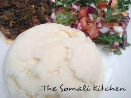

Recipes

Soor
This is a delicious Somali lunch made of corn flour
This recipe is call soor
Ingredeints
STEPS
1.Get a 200g of corn flour
2.Get a pot
3.Put the pot on the fire and pour 1 litre of water
4.pour the corn flour on a warm water
5.Let the flour boil for 15 minuts
6.Now it is ready
7.Get an other pot
8.Put it on the fire
9.Pour two spoonfull of sunflower oil
10.Put all choped vegetables and meet in the pot
11.Stir for a minut
12.Pour a half class of water
13.Let it cook for 30 minuts
14.Now lunch is ready to serve